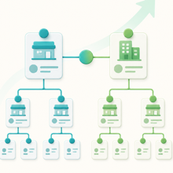

Un modelo comercial donde cada negocio administra su propia red y puede integrarse a una red mayor.
1. Qué es la Red de Redes
SaldiFY conecta empresas, negocios, vendedores y clientes dentro de una estructura comercial que puede crecer por niveles.
Cada participante puede administrar a sus propios clientes y también integrarse como cliente de otro negocio. De esta manera, las redes no quedan aisladas: pueden conectarse y formar una estructura más amplia.
2. Anfitrión e Invitado
Anfitrión
Es quien administra una red. Puede invitar clientes, ofrecer productos, asignar crédito y dar seguimiento a compras, pagos, saldos y cobranza.
Invitado
Es el cliente que entra conectado a un Anfitrión. Puede consultar su relación comercial, realizar operaciones y participar activamente en la red.
Una misma persona o empresa puede tener ambos roles. Por ejemplo, un comercio puede ser Invitado de su proveedor y Anfitrión de sus propios clientes.
3. Operación independiente
Un Anfitrión puede utilizar SaldiFY de forma independiente, sin pertenecer a otra red. En ese caso funciona como la raíz de su propia operación.
- Crea o invita a sus clientes.
- Administra crédito, compras, pagos y saldos.
- Gestiona productos e inventario.
- Controla cobranza e historial.
- Decide cuánto quiere crecer su red.
4. Cómo crece una red
El crecimiento inicial ocurre cuando un Anfitrión invita a personas o negocios que todavía no utilizan SaldiFY. Cada invitación aceptada incorpora un nuevo participante.
Invitación
El Anfitrión comparte un acceso con su cliente.
Registro
El cliente se identifica y entra como Invitado.
Relación
El cliente queda conectado a la red correcta.
Expansión
Si ese cliente crea su propia red, se abre un nuevo nivel.
El resultado puede comenzar como una red sencilla de un nivel y evolucionar gradualmente hacia una red de redes.
5. Catálogo y ventas
El Anfitrión puede ofrecer su catálogo y vender sus propios productos o servicios a los clientes de su red.
- Catálogo propio: administra y vende su oferta.
- Catálogo compartido: puede participar con la oferta de una red superior cuando corresponda.
- Compra libre: puede registrar operaciones que no dependen de un catálogo.
Las compras pueden ser registradas por el Anfitrión o solicitadas por el Invitado. SaldiFY conserva el seguimiento de cada operación.
6. Integración entre redes
Dos Anfitriones independientes pueden conectarse. Cuando un Anfitrión raíz acepta la invitación de otro, se convierte también en su cliente y conserva completa su propia red.
Los clientes de A no se copian, no se registran nuevamente y no cambian su relación directa. La red completa de A se integra naturalmente debajo de Z.
7. Visibilidad de la red
Cuando un cliente también es Anfitrión, su Anfitrión superior puede consultar la red que existe debajo de él.
8. Funcionamiento actual
Durante la etapa inicial, la Red de Redes funciona entre Anfitriones raíz. SaldiFY permite integrar una red completa cuando el Anfitrión que acepta la invitación es independiente y todavía no pertenece a otro Anfitrión.
Un Anfitrión que ya depende de otro Anfitrión todavía no puede trasladarse a una red diferente, aunque tenga clientes propios debajo de él.
| Situación | Resultado actual |
|---|---|
| Cliente nuevo sin red | Disponible Se integra normalmente. |
| Anfitrión raíz con clientes propios | Disponible Se integra con toda su red. |
| Anfitrión que ya depende de otro Anfitrión | Limitado temporalmente Permanece con su Anfitrión actual junto con su propia red. |
| Cambio que produciría una relación circular | No permitido Siempre se rechaza. |
9. Evolución prevista
Cuando el ecosistema de SaldiFY crezca, un usuario que ya pertenece a una red podrá aceptar la invitación de otro Anfitrión y trasladarse con todos sus clientes.
El cambio será automático cuando su relación actual esté limpia:
- Saldo pendiente igual a cero.
- Sin compras pendientes de resolver.
- Sin pagos pendientes de confirmar.
- Sin gestiones abiertas.
- Sin riesgo de crear una relación circular.
B conserva sus clientes, cuentas, crédito, compras, pagos, estados e historial. Únicamente cambia el Anfitrión superior.
10. Reglas de seguridad
- Cada participante puede tener un solo Anfitrión directo.
- Nadie puede utilizar su propia invitación.
- No se permiten relaciones circulares.
- Un cambio de red mueve una rama completa, sin duplicarla.
- Los clientes descendientes conservan sus relaciones directas.
- El historial y los estados comerciales permanecen con el usuario trasladado.
- Las obligaciones abiertas deben resolverse antes de cambiar de red.
Estas reglas permiten crecer por muchos niveles sin duplicar usuarios ni generar caminos infinitos.
11. Escenarios principales
Cliente nuevo
Entra directamente a la red que lo invitó.
Anfitrión independiente
Se integra como cliente y conserva toda su red.
Cliente que crea su red
Continúa como Invitado hacia arriba y se convierte en Anfitrión hacia abajo.
Cambio futuro de red
Se realizará automáticamente cuando no existan obligaciones pendientes.
Saldo pendiente
El cambio se bloquea hasta liquidar la relación actual.
Riesgo circular
La invitación se rechaza para proteger la estructura.
12. Valor comercial y oportunidad
SaldiFY puede crecer de manera orgánica: cada Anfitrión incorpora a sus propios clientes y algunos de esos clientes pueden convertirse en nuevos Anfitriones.
En la etapa actual, la probabilidad de que varias redes independientes se crucen todavía es baja, porque el mercado disponible es amplio y el ecosistema está comenzando a crecer. La integración entre raíces permite probar desde ahora el concepto completo.
Si SaldiFY alcanza una adopción amplia o viral, será más frecuente que un usuario ya registrado reciba invitaciones de otras redes. En ese momento se activará el cambio automático entre redes con las reglas de seguridad descritas.
La visión: una plataforma donde cada negocio puede operar de forma independiente y, al mismo tiempo, conectarse a una red comercial mucho mayor.